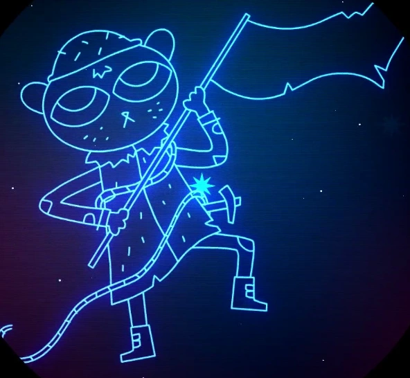

Это созвездие о медведе в снаряжении альпиниста, с веревкой вокруг торса, гордо держащего флаг. Фердинанд был родом с равнин. Он мечтал о горах и посвятил всю свою жизнь, взбираясь на них. Он вернулся домой и сетовал, что само небо казалось ему тяжким. Он уже был среди облаков, и теперь они лежали тяжким грузом над ним.
Моя любимая игра с глубоким - это Ночь в деревьях
Про Уроброс